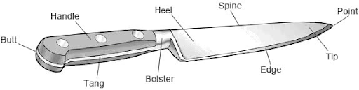

Introduction to Knives

Having the right knife is important when cutting different items in the kitchen.
Knives are made differently depending on the manufacturer.
Let's go over the parts of a knife.
Where the blade and spine meet the point is used for scoring and piercing.
The main body of the knife. This includes the edge, heel, spine, point, and tip. Blades are defined by size, shape and material.
The first third of the blade. The tip includes the point and is used for slicing and delicate cutting.
Runs from the point to the heel. This is the sharp part of the blade.
This is the thickest part of the blade. Edge varies from knife to knife and can determine the stability of the blade.
Portion of the knife that extends from the bolster to the butt. Shape, weight, and material can vary by manufacturer and chefs often have a personal preference.
Between the blade and the handle, this adds a counterbalance to the weight of the blade.
Used to secure the blade to the handle. Rivets need to be flush so they do not rub the hand during use.
Metal part of the blade that extends into handle. The tang gives the knife strength and stability.
Back end of the handle.
Different types of blades are used for different purposes.
| Blade Construction | Purpose |
|---|---|
| Bevel | Any surface of the blade that has been grounded to form an edge. Most knives have beveled edges. |
| Chisel | One edge is flat while the other is sharpened. Typically seen in Sushi knives. |
| Scallopped/Serrated | Cutting edge in mini arches and pointy outer edges, used for breads, steaks. |
| Kullenschliff/Graton Edge | Depressions in the blade that reduce friction and help prevent food from sticking to the blade |
Knives have an extremely sharp edge and discolor easily.
Resists corrosion and is easy to maintain, but it is brittle and difficult to keep a sharp edge.
Forged carbon knives are offered with the option of titanium coating. These knives are expensive and prized by professionals. The knives will sharpen well and keep the sharp edge longer.
The ceramic knife is the hardest edge available for cooking. It is expensive, sharp, and long lasting.
The most important safety factor is blade sharpness. A dull knife is a safety hazard. Knives should be sharp enough to cut through a tomato without damaging the flesh inside.
When holding a knife, have your thumb rest on the inside of the knife, above the sharpened blade. Your index finger is on the outside and “hooks” it, safely away from the sharp edge. The other three fingers grip to the bottom of the handle.
Cutting surfaces should be flat and stable.
Don’t rush, cutting should be done in a systematic manner. Vegetables should be flat on cutting boards.
Don’t put knives in the sink. Put dirty knives on the counter, not in a tub of soapy water. The blade should be facing away from you as you wash.
Walk with knife pointed towards the ground, not pointed outward. When you want to pass a knife to someone, place it on the cutting board and let them pick it up.
Store knives in a block or other knife storage. Do Not Store Knives Loose In A Drawer!
The image below shows the parts of a knife.
Types of Knives: What knife is used for cutting what item?
I’m going to speak to the five most often used knife blades and their usages. The most often used knife is the chef’s knife. This is a 9 inch. There’s 8 inch. 9 an 10 inch are the most often used sizes. The blade is long with a camber and a tip and it’s used down on the board to cut fruits, vegetables, meats, anything that you want to cut. That’s about 80% of all cuts you make.
The next most often used knife is the paring knife. The paring knife is primarily for pick up work. So when you pick up an item, a fruit, a vegetable, you core, spear, or peel, that’s the paring knives function.
The next most often used knife blade shape is the bread knife. The bread knife has scallops as you’ll see right here on the side, on the edge and it is used to gain traction on a tomato or a bread crust and then slice it.
The utility knife is the next most used knife. That is an in-between knife between your paring and your chef’s. It’s used to make slices down on the board and sometimes up in the hands.
The carving knife is used to slice meats. It’s the fifth most used knife. And, this one has kullenschliff or hollow grounds on the side to help alleviate sticking to the side of the blade. It’s used to slice meats.
Those are the five most often used knife blades.